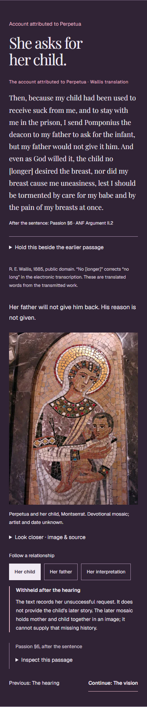
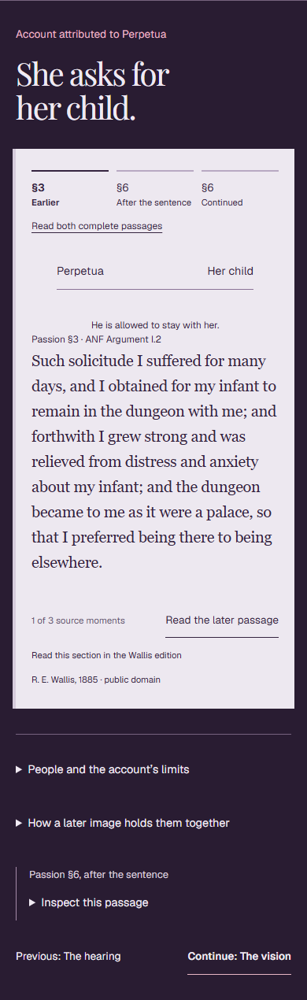
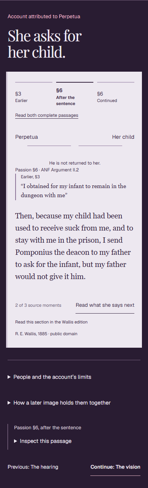
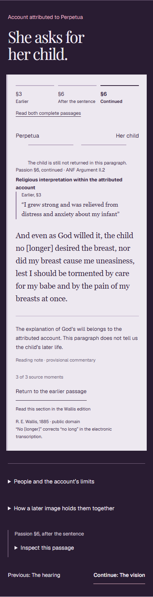

The same account. A different way through it.
Separation-scene browser evidence for BibleMap PR #36. These are actual 390px captures. The source remains the established R. E. Wallis translation, with attributed testimony and religious interpretation identified separately.
PROMISING — continue exploring. A single-scene pilot. No reader study, editorial approval or production authorization is claimed.

BeforeA quotation and an image. The earlier passage is behind a disclosure.

Earlier, §3The child is allowed to stay. The reader advances when ready or opens both complete passages.

After the sentence, §6The new source moment returns to the beginning of the reading. The earlier relationship remains in view.

The account continues, §6Earlier words about relief return. The account's religious interpretation is distinguished from independent historical verification.
Read the critique, verification and remaining limits · Desktop capture · 320px capture · Source fingerprints and browser observations
Photograph visible in the baseline: Enric / Wikimedia Commons, CC BY-SA 3.0, via the Perpetua and Felicitas Exhibit. The local derivative was resized and converted to WebP; the complete composition is retained. It depicts a later devotional mosaic whose artist and date are unknown.